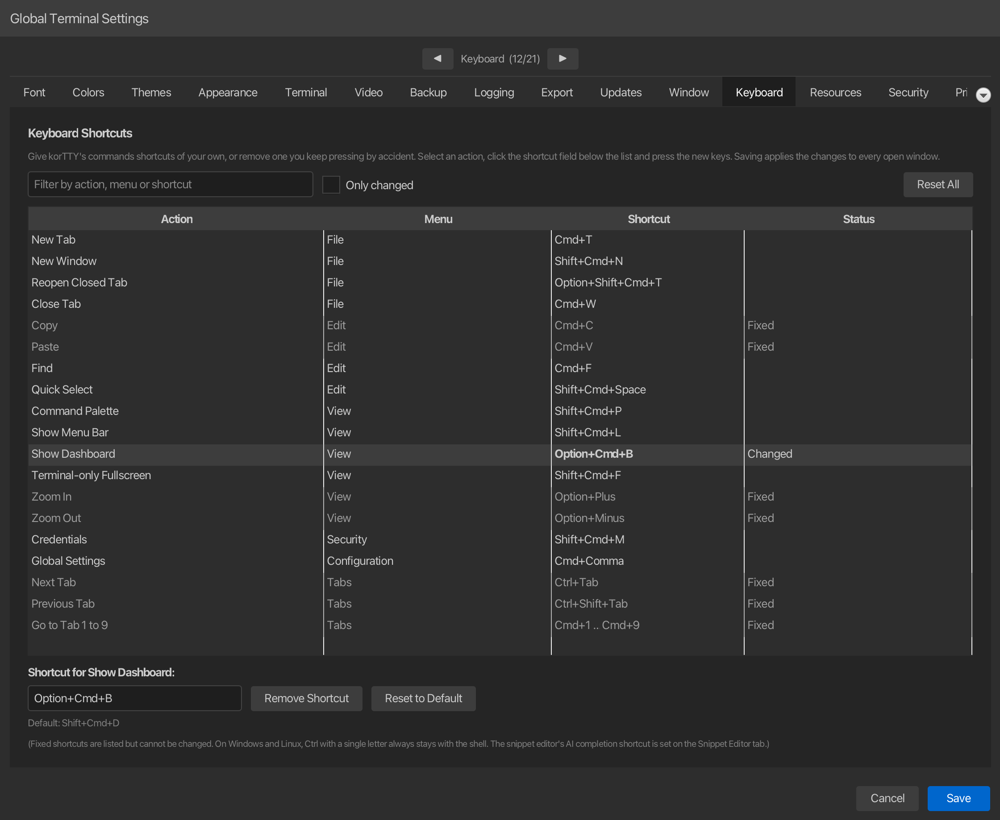

Keyboard¶
This tab lets you choose your own shortcuts for korTTY's commands: give a menu command other keys, give a command without a shortcut one, or remove a shortcut you keep pressing by accident. Open via Configuration → Global Settings → Keyboard; stored in ~/.kortty/global-settings.xml.

| Setting | Type | Values | Default | Stored as |
|---|---|---|---|---|
| Shortcut of a command | key combination | a key with Ctrl, Alt or Cmd, F1 to F12 on their own, or none | the shortcut its menu shows | keyBindingOverrides (one binding per changed command) |
The list holds every command of the window's menu bar, also the ones without a shortcut, in menu order. Its columns are the Action, the Menu it is in (its menu path, as the command palette shows it), the Shortcut and a Status: empty for a command on its default shortcut, Changed or Removed for one you changed, Fixed for a shortcut that cannot be changed, Also used by … for a conflict and Not used here for a stored shortcut this computer does not accept. Type part of a command's name, its menu or its keys into Filter by action, menu or shortcut to find it, for example dashboard, view or shift+cmd+d, and tick Only changed to list only the commands you changed.
Changing a shortcut¶
- Select the command in the list.
- Click the shortcut field below the list and press the new combination. Holding a modifier on its own records nothing, so press Ctrl, Alt, Shift or Cmd together with the key.
- Click Save.
The field takes the key press as the command's new shortcut and the list shows it as Changed; a combination korTTY cannot use is refused with the reason below the field, and the command keeps its shortcut. While the field records, Esc ends recording without a change and Tab leaves the field. Remove Shortcut leaves the command without a key, Reset to Default gives it its own shortcut back, and Reset All puts every command back on its default. Pressing the default shortcut in the field is the same as Reset to Default. The line below the field shows the default shortcut of the selected command.
Saving applies the shortcuts at once in every open window, without a restart: the menus show the new keys, and so does the command palette. A shortcut you choose also works while a terminal has the focus: korTTY runs the command instead of passing the keys to the shell, and whatever character they would type is kept out of the terminal, so it never reaches the shell or, in broadcast mode, the other panes. A function key you give a command therefore no longer reaches the programs in the terminal, such as mc or htop.
Shortcuts korTTY refuses¶
korTTY does not take a key away from the shell or the system, so these combinations are refused when you record them:
| Combination | Why |
|---|---|
Ctrl with a letter (Ctrl+L, Ctrl+F, Ctrl+D, Ctrl+P, Ctrl+R, Ctrl+C, Ctrl+V and every other letter; on macOS the Control key, not Cmd), Ctrl+Space, Ctrl with [, ], \ or /, Ctrl+Shift+6, Ctrl+Shift+2 and Ctrl+Shift+- |
They send control characters the shell and the programs in the terminal use; Ctrl+Shift+6 is the Cisco break sequence |
| Ctrl or Alt with Left, Right, Backspace or Del | They move or delete a word at the shell's prompt |
| Alt with a letter, digit or punctuation key on Windows and Linux | korTTY sends it as the shell's Meta key |
| Ctrl+Alt with a character key on Windows, Option with a character key on macOS | They type a character on many keyboard layouts: on Windows AltGr arrives as Ctrl+Alt |
| Cmd+C, Cmd+V, Cmd+K, Cmd+F, Cmd+Up and Cmd+Down on macOS, Ctrl+Shift+C, Ctrl+Shift+V, Ctrl+Up and Ctrl+Down on Windows and Linux, Shift+Page Up and Shift+Page Down everywhere | The terminal's own keys for copying, pasting, clearing, finding and scrolling |
| Cmd+Tab, Cmd+Space, Cmd+H, Cmd+Shift+Q, Cmd+Option+D, Ctrl+Up, Ctrl+Down and the screenshot keys on macOS, Alt+Tab, Alt+F4, Alt+Space and Ctrl+Esc on Windows, Alt+Tab, Alt+F4, Ctrl+Alt+Del and Ctrl+Alt+F1 to Ctrl+Alt+F12 on Linux | The operating system keeps them |
| A key without Ctrl, Alt or Cmd, other than F1 to F12 | It would type text |
| A fixed shortcut | korTTY keeps it for its command |
Show Menu Bar cannot lose its shortcut: with the menu bar hidden it is the keyboard's way back to the menus. It can get another one.
Fixed shortcuts¶
A few shortcuts are listed in grey with the status Fixed and cannot be changed, because more than the menu handles them: Cut, Copy and Paste are also the clipboard keys of the terminal and of every text field, Previous Prompt and Next Prompt are keys of every terminal pane, and the zoom keys and F12 (Fullscreen) follow your keyboard layout. Next Tab and Previous Tab (Ctrl+Tab and Ctrl+Shift+Tab) and the tab jump keys (Cmd+1 to Cmd+9 on macOS, Ctrl+1 to Ctrl+9 on Windows and Linux) have no menu item and are fixed too. See Keyboard shortcuts for what each of them does.
Conflicts¶
A shortcut that another command already uses is taken, so you can swap the shortcuts of two commands in two steps. Until each shortcut is used by one command only, both rows show Also used by … in red, a line above the list names the shared shortcuts, and the Keyboard tab shows a red number. Save then keeps the dialog open and shows the Keyboard tab with the first conflict selected: change or remove one shortcut of each pair to save.
Shortcuts from another computer or version¶
A shortcut is stored for every platform at once: one you record with Cmd on a Mac is the same shortcut with Ctrl on Windows and Linux. When a settings file holds a shortcut that this computer refuses, such as Cmd+L from a Mac, which is Ctrl+L and belongs to the shell on Linux, the command's row shows Not used here and the reason, the command keeps its default shortcut here, and the stored shortcut stays in the file for the Mac. Shortcuts of commands that this version of korTTY does not have, from a newer version, are kept as well, and a note above the list names them. A settings file from a version without this tab opens with every default.
In global-settings.xml each changed command is one entry such as <binding>menu.view.commandPalette=Shortcut+Alt+P</binding>, or =none for a removed shortcut, inside <keyBindingOverrides>. The name before = is the command's id; Shortcut means Cmd on macOS and Ctrl on Windows and Linux, while Ctrl is the Control key itself on every platform. An entry korTTY cannot read is ignored.
Note
The AI completion shortcut of the snippet editor is not on this tab; set it on the Snippet Editor tab.